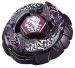

Bakushin Susanow 90WF
| Bakushin Susanow 90WF | |
|  | |
| Number: | |
|---|---|
| System: | Hybrid Wheel System |
| Type: | Attack |
Contents
Note: Hasbro released this Beyblade with a different Track and Bottom, using 105F instead of 90WF. They however did release this second set of parts along with Bakushin Susanow for the Luna Eclipse Ver. Starter, which came after the inclusion of that recolour in the localised version of the Big Bang Bladers video game.
Face: Susanow
The Face on this Beyblade depicts Susanoo, the Shinto God of the Sea and Storms.
Clear Wheel: Susanow
- Weight: grams
Susanow is an ocean blue translucent Clear Wheel in its original release. The design is made to resemble two waves with sharp designs almost like hooks or lightnings that arch upward. When placed on the Metal Wheel, the relief is remniscent of a Tsunami. Between the waves are orange letters that read "Susanow" in a graffiti style on both sides.
Metal Wheel: Bakushin
- Weight: grams
Bakushin is an originally white Metal Wheel made in a circular shape with very small V-shaped gaps which are approximately one millimeter deep. As a whole, this Metal Wheel resembles a rock with declinations of varying steepness and carved ridges here and there. Although it generally performs in a mediocre way, some testing has showed that it has some decent Stamina and OK Attack despite its inferior weight. Its highest potential lies in its apparent defensive capabilities, however, due to its physical compatibility with BD145 where very little space is left between the Metal Wheel and the Track. In fact, even at the time of its release, it equaled Earth compared to the top-tier Attack types of that period, but the fact that Bakushin was painted repelled Bladers from testing it extensively. On average, however, especially with 4D parts available, Bakushin should only be used as a very last resort. Even with its potential in a few different Beyblade types, it could overall almost be classified as outclassed even following its release, since it possesses the flaws of most Balance-type parts that try to do well in several categories but fail to excel anywhere.
Track: 90
| Weight: | 0.9 gram | Full Width: | 21.0 mm | Height: | 9.00 mm |
90 was the lowest Track until the release of 85 with Mercury Anubis. Its low height is good for both low Attack customizations and low Stamina customizations, but is outclassed slightly in both regards by the aforementioned 85.
Use in Attack Customization
If 85 is unavailable, 90 can still be effective in Attack customizations such as MF Vulcan Horuseus 90R²F.
Use in Stamina Customization
If 85 is unavailable, 90 can be put to use in the Stamina customization Earth Bull 90WD.
Bottom: Wide Flat
- Weight: 0.6 grams
WF, like the name suggests, is a wider version of F. Its significantly larger surface area allows it to travel much faster than F. However, due to the fact that it is plastic, it is slower than RF, as it does not produce as much friction with the stadium floor and is not able to neutralize the recoil of certain Wheels as efficiently as RF. It has also much more trouble maintaining the "flower pattern" from a Sliding Shoot due to this. The upside to its lower friction is that it has much better Stamina than RF, allowing it to be used in destabilizing attackers.
Use in Attack Customization
WF works exceptionally well in the destabilizing attacker MF L Drago 100WF. MF increases the weight of the Beyblade, which is important in this case because L Drago is one of the lightest Wheels ever created, and while it may not have terribly high recoil, the fact that it is utilizing a plastic Flat Bottom with less friction than a rubber-based Flat Bottom, makes it easier to KO. The 100 Track lowers the Beyblade to a level where it is able to destabilize any opponent, without the risk of scraping the floor with a Track such as 85 or 90. Additionally, it also provides it with a minutely increased amount of precession time, which is vital for this custom, as it will regularly win by a fraction of a second. WF provides enough movement speed to help it KO it's opponent, while still retaining a relatively high amount of Stamina for an Attack type.
When pitted against Defense customizations not utilizing 230, this combo has an almost 100% win rate, and will win both by KO and out-spin depending on which parts it's opponent is using.
Against Stamina customizations utilizing 230, it performs poorly, just as it does against 230-based Defense customs, but against any other height MF L Drago 100WF has a decent chance at victory depending on the condition of the Bottom it's opponent is using, the strength of their opponents launch, and the Wheel being utilized.
Versus conventional Attack types utilizing a rubber-based Bottom such as RF, it also has a decent chance at victory. However, this is only if it is able to outrun said Bottom, something which is entirely possible with WF's high movement speed which rivals that of RF. In these instances it also has the ability to win by KO?often by simply "pushing" the opponent out of the stadium as it circles the Tornado Ridge (remember, WF has a tough time retaining the "flower" pattern)?or via out-spin due to its higher Stamina compared to the RF custom.
This combo is far from being perfect, but it is a very safe combo to use in a competitive situation, as you will almost always have at least a chance of winning.
Other Versions
- Metal Face Bakushin Susanow 105F ? Hudson Entertainment Beyblade : Metal Fusion DS game exclusive (Dark blue Metal Face)
- Bakushin Susanow 90WF Luna Eclipse Ver. ? WBBA Campaign, later WBBA Shop Exclusive Booster, and Hasbro Metal Masters Starter (Dark red Face, Track and Bottom, black Metal Wheel and Clear Wheel, white "Susanow" writings)
- Metal Face Bakushin Susanow 90WF Luna Eclipse Ver. - Beyblade Metal Masters video game exclusive for Walmart and Gamestop (Black Metal Face, dark red Track and Bottom, black Metal Wheel and Clear Wheel, white "Susanow" writings)
Gallery
Bakushin Susanow 90WF
-
WF
Bakushin Susanow 90WF - Luna Eclipse Version
-
Susanow sideview
-

Susanow underside
Overall
Bakushin may have some untapped Stamina, Defense and Attack potential, but it still got outclassed in TAKARA-TOMY BeyStadiums due to the appearance of even such outclassed, but better, Metal Wheels like Earth, as well as countless superior Attack parts. 90, considered outclassed by 85, still shows some use in scarce L Drago Attack customs for destabilizing, and it can be used for some decent Stamina combos. WF as an Attack type Bottom is outclassed too,but it still works reasonably well in Destabilizing customs. There is little to no reason to purchase this Beyblade other than for collectors purposes.